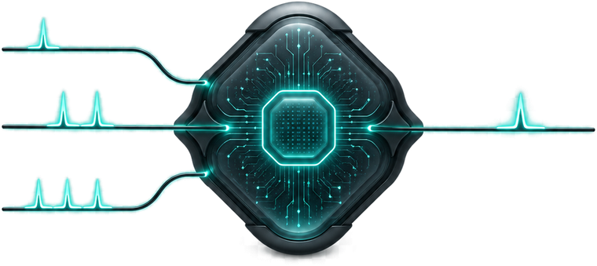
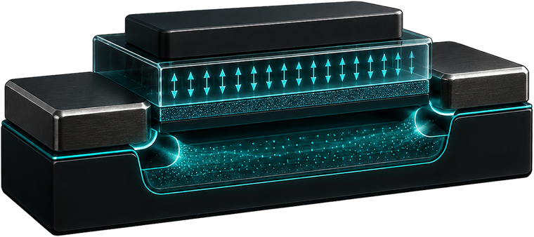
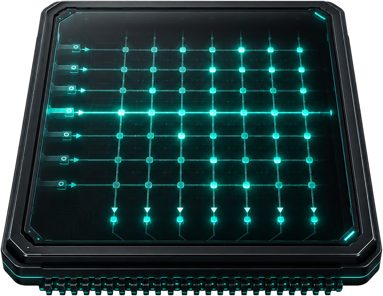
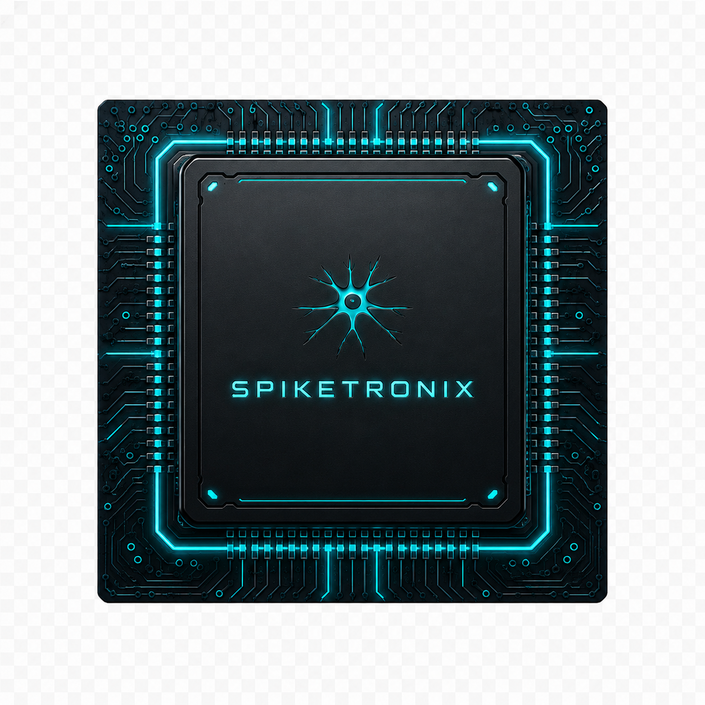

Years on a coin cell, or self-powered.
Rare events should not require a processor and volatile memory to remain active around the clock.
Spiketronix designs ultra-low-power neuromorphic AI chips, and the software to run them, built on non-volatile compute-in-memory.

Rare events should not require a processor and volatile memory to remain active around the clock.
Local inference removes network delay and reacts while the signal still matters.
Continuous local sensing keeps critical data private and surfaces early warning patterns.
Each pillar removes a different source of wasted energy. Together, they make always-on intelligence practical.

Sleeps until something changes.
Spiking neurons stay silent until their input changes, then emit a brief spike — no event, no computation, no energy. Time and sequence are built in, so vibration, sound and biosignals are computed the way the brain does.

Remembers the model with power removed.
Once compute is sparse, the real cost is remembering the model through the long gaps between events. FeRAM holds every weight with the power fully off — so the gaps cost nothing, and the chip is instant-on.

Computes where the weights are stored.
A conventional chip shuttles weights to a separate compute unit every operation — and moving data wastes time and energy. Compute-in-memory does the maths where the weights already live, so nothing moves.
The platform isn't a bare accelerator block you're left to wire up. Silicon, model and toolchain are co-designed as one system, so it ships as a finished part you can build a product around.
The neuromorphic compute engine and memory system integrated as one chip platform.
Designed to connect with conventional embedded systems and host controllers.
Device variation is handled inside the platform rather than pushed onto the customer.
A deployable architecture rather than a custom research demonstrator.

Neuromorphic SoC Ultra-low-power edge AIModels are trained around the actual memory, quantization and compute behaviour.
Standardized configuration and control instead of custom laboratory scripts.
Moves a trained network into a configured, deployable hardware implementation.
The deployed model can be calibrated to the device and its operating environment.


Edge-AI hardware and system architecture; PhD from TUM.
CEO & System Architect

Two decades in deep-tech business development and funding.
CFO & Strategy

Ferroelectric devices and neuromorphics; professor at TU Braunschweig and team lead at Fraunhofer IPMS.
Scientific Advisor
We are happy to answer questions and provide more details about Spiketronix. Reach out for collaborations, partnerships or additional information.